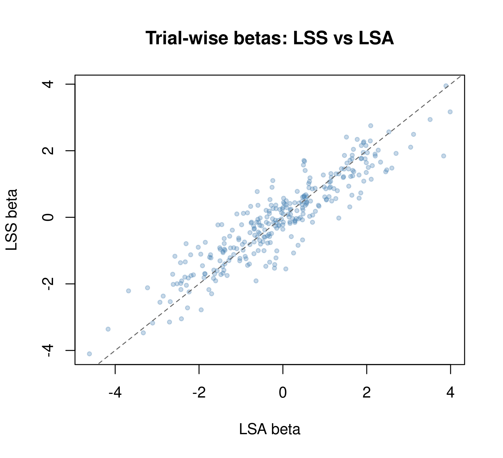

Why fmrilss?
In rapid event-related fMRI, hemodynamic responses from consecutive trials overlap, making trial-by-trial beta estimates unstable. This is a problem for MVPA, RSA, and connectivity analyses that need reliable single-trial activation patterns.
Least Squares Separate (LSS; Mumford et al., 2012) solves this by fitting a separate GLM for each trial: one regressor for the trial of interest, one aggregating all other trials, plus nuisance regressors. This reduces collinearity and stabilizes estimates.
fmrilss provides optimized LSS implementations (R and
C++ with OpenMP), plus extensions for automatic HRF estimation, ridge
regularization, and the OASIS single-pass solver.
Quick example
Create a rapid event design
We’ll simulate 12 trials in a 150-TR run with jittered onsets, then convolve with a canonical HRF to build one design-matrix column per trial.
n_time <- 150
n_trials <- 12
n_vox <- 25
sframe <- sampling_frame(blocklens = n_time, TR = 1)
base <- round(seq(10, n_time - 24, length.out = n_trials))
onsets <- sort(pmax(10, pmin(base + sample(-3:3, n_trials, TRUE), n_time - 24)))
rset <- regressor_set(onsets, factor(seq_along(onsets)),
hrf = HRF_SPMG1, duration = 0, span = 24, summate = FALSE)
X <- evaluate(rset, grid = samples(sframe, global = TRUE),
precision = 0.1, method = "conv")X is a 150 x 12 matrix — one column per trial, each
containing the HRF-convolved impulse.
Simulate data with known ground truth
Run LSS
At its simplest, lss() needs only the data and the trial
design:
Include Z and Nuisance for a more complete
model:
beta_full <- lss(Y, X, Z = Z, Nuisance = Nuisance)
stopifnot(
all(dim(beta_full) == c(n_trials, n_vox)),
all(is.finite(beta_full))
)That’s it — beta_full is a 12 x 25 matrix of
trial-by-voxel estimates.
LSS vs standard GLM
The traditional approach (“Least Squares All”, LSA) estimates all trials in one model. Let’s compare:
beta_lsa <- lsa(Y, X, Z = Z, Nuisance = Nuisance)
comparison_summary <- data.frame(
Method = c("LSS", "LSA"),
CorrelationToTruth = c(
cor(as.vector(beta_full), as.vector(true_betas)),
cor(as.vector(beta_lsa), as.vector(true_betas))
),
MeanTrialVariance = c(
mean(apply(beta_full, 2, var)),
mean(apply(beta_lsa, 2, var))
)
)
comparison_summary
#> Method CorrelationToTruth MeanTrialVariance
#> 1 LSS 0.9602123 1.675530
#> 2 LSA 0.8996540 2.163055
stopifnot(all(is.finite(as.matrix(comparison_summary[, -1]))))In this simulation, LSS is both less variable and closer to the known trial effects. A scatter plot shows how the two estimators relate to each other:
plot(as.vector(beta_lsa), as.vector(beta_full),
pch = 19, col = adjustcolor("steelblue", 0.3), cex = 0.6,
xlab = "LSA beta", ylab = "LSS beta",
main = "Trial-wise betas: LSS vs LSA")
abline(0, 1, lty = 2, col = "gray40")
Prewhitening
fMRI time series have temporal autocorrelation. Pass a
prewhiten list to correct for it:
Automatic AR order selection:
beta_auto <- lss(Y, X, Z = Z, Nuisance = Nuisance,
prewhiten = list(method = "ar", p = "auto", p_max = 4))See ?lss for additional pooling strategies
("voxel", "run", "parcel") and
ARMA models.
Computational backends
The default backend ("r_optimized") is fast and
readable. For large datasets, switch to the parallelized C++ engine:
beta_cpp <- lss(Y, X, Z = Z, Nuisance = Nuisance, method = "cpp_optimized")
all.equal(beta_full, beta_cpp, tolerance = 1e-8)
#> [1] TRUEAvailable methods: "naive", "r_vectorized",
"r_optimized" (default), "cpp_optimized",
"oasis".
OASIS: single-pass LSS with extras
OASIS can build the design matrix from event specifications, add ridge regularization, and fit multi-basis HRFs — all in one call:
beta_oasis <- lss(
Y, X = NULL, method = "oasis",
oasis = list(
design_spec = list(
sframe = sframe,
cond = list(onsets = onsets, hrf = HRF_SPMG1, span = 24)
)
)
)
dim(beta_oasis)
#> [1] 12 25Setting X = NULL lets OASIS construct the design
internally from design_spec. Fractional ridge
regularization (5%) is applied by default to stabilize overlapping
designs. See vignette("oasis_method") for ridge tuning,
multi-basis HRFs, standard errors, and diagnostics.
Nuisance pre-projection
If you plan to re-run LSS with different settings, it can be faster to project out nuisance once up front:
Q <- project_confounds(Nuisance)
beta_pre <- lss(Q %*% Y, Q %*% X, Z = Z, method = "r_optimized")This is useful when sweeping over hyperparameters (e.g., ridge values) without re-projecting nuisance regressors each time.
Next steps
-
vignette("oasis_method")— OASIS solver with ridge, multi-basis HRFs, and standard errors -
vignette("voxel-wise-hrf")— per-voxel HRF estimation before LSS -
vignette("sbhm")— library-constrained voxel-specific HRFs -
vignette("lss_with_fmridesign")— formula-based design interface for multi-run experiments
References
Mumford, J. A., Turner, B. O., Ashby, F. G., & Poldrack, R. A. (2012). Deconvolving BOLD activation in event-related designs for multivoxel pattern classification analyses. NeuroImage, 59(3), 2636–2643.
#> R version 4.5.3 (2026-03-11)
#> Platform: x86_64-pc-linux-gnu
#> Running under: Ubuntu 24.04.4 LTS
#>
#> Matrix products: default
#> BLAS: /usr/lib/x86_64-linux-gnu/openblas-pthread/libblas.so.3
#> LAPACK: /usr/lib/x86_64-linux-gnu/openblas-pthread/libopenblasp-r0.3.26.so; LAPACK version 3.12.0
#>
#> locale:
#> [1] LC_CTYPE=C.UTF-8 LC_NUMERIC=C LC_TIME=C.UTF-8
#> [4] LC_COLLATE=C.UTF-8 LC_MONETARY=C.UTF-8 LC_MESSAGES=C.UTF-8
#> [7] LC_PAPER=C.UTF-8 LC_NAME=C LC_ADDRESS=C
#> [10] LC_TELEPHONE=C LC_MEASUREMENT=C.UTF-8 LC_IDENTIFICATION=C
#>
#> time zone: UTC
#> tzcode source: system (glibc)
#>
#> attached base packages:
#> [1] stats graphics grDevices utils datasets methods base
#>
#> other attached packages:
#> [1] fmrilss_0.1.0 fmrihrf_0.3.0 RcppArmadillo_15.2.4-1
#> [4] Rcpp_1.1.1
#>
#> loaded via a namespace (and not attached):
#> [1] Matrix_1.7-4 gtable_0.3.6 jsonlite_2.0.0
#> [4] dplyr_1.2.1 compiler_4.5.3 tidyselect_1.2.1
#> [7] assertthat_0.2.1 jquerylib_0.1.4 splines_4.5.3
#> [10] systemfonts_1.3.2 scales_1.4.0 textshaping_1.0.5
#> [13] uuid_1.2-2 yaml_2.3.12 fastmap_1.2.0
#> [16] lattice_0.22-9 ggplot2_4.0.2 R6_2.6.1
#> [19] generics_0.1.4 knitr_1.51 htmlwidgets_1.6.4
#> [22] tibble_3.3.1 desc_1.4.3 bslib_0.10.0
#> [25] pillar_1.11.1 RColorBrewer_1.1-3 rlang_1.2.0
#> [28] cachem_1.1.0 xfun_0.57 fs_2.0.1
#> [31] sass_0.4.10 S7_0.2.1 otel_0.2.0
#> [34] memoise_2.0.1 cli_3.6.6 pkgdown_2.2.0
#> [37] magrittr_2.0.5 digest_0.6.39 grid_4.5.3
#> [40] bigmemory.sri_0.1.8 bigmemory_4.6.4 lifecycle_1.0.5
#> [43] vctrs_0.7.2 evaluate_1.0.5 glue_1.8.0
#> [46] fmriAR_0.3.1 numDeriv_2016.8-1.1 farver_2.1.2
#> [49] ragg_1.5.2 purrr_1.2.2 rmarkdown_2.31
#> [52] albersdown_1.0.0 tools_4.5.3 pkgconfig_2.0.3
#> [55] htmltools_0.5.9